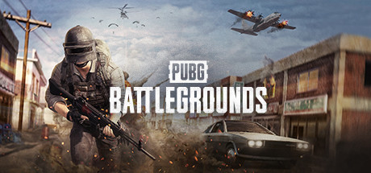

PLAYERUNKNOWN'S BATTLEGROUNDS - это шутер в котором выигрывает последний оставшийся в живых участник. Начиная игру ни с чем, вы должны раздобыть оружие и припасы чтобы бороться за первое место и стать последним героем. Напряженная битва в этой реалистичной игре происходит на огромном 8х8 километровом пост-советском черноморском острове Эрангель. PLAYERUNKNOWN'S BATTLEGROUNDS разрабатывается на Unreal Engine 4 с постоянной помощью и поддержкой от наших игроков. PLAYERUNKNOWN, также известный как Брендан Грин, является пионером жанра Battle Royale. Как создатель игрового режима Battle Royale в серии ARMA и H1Z1: King of the Kill, Грин разрабатывает игру совместно с командой ветеранов в Bluehole, чтобы создать самую разнообразную и взрывоопасную версию Battle Royale на сегодняшний день. Это не просто игра. Это Королевская Битва!p